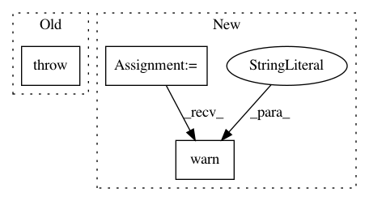

7d1e0bc5872855af5bf35a725025d3bdb6f07d6c,keras/callbacks.py,TensorBoard,__init__,#TensorBoard#Any#Any#Any#Any#Any#Any#Any#Any#Any#,631
Before Change
embeddings_metadata=None):
super(TensorBoard, self).__init__()
if K.backend() != "tensorflow":
raise RuntimeError("TensorBoard callback only works "
"with the TensorFlow backend.")
global tf, projector
import tensorflow as tf
from tensorflow.contrib.tensorboard.plugins import projector
self.log_dir = log_dir
After Change
if K.backend() != "tensorflow":
if histogram_freq != 0:
warnings.warn("You are not using the TensorFlow backend. "
"histogram_freq was set to 0")
histogram_freq = 0
if write_graph:
warnings.warn("You are not using the TensorFlow backend. "
"write_graph was set to False")
In pattern: SUPERPATTERN
Frequency: 3
Non-data size: 3
Instances
Project Name: keras-team/keras
Commit Name: 7d1e0bc5872855af5bf35a725025d3bdb6f07d6c
Time: 2018-01-24
Author: gabrieldemarmiesse@hotmail.fr
File Name: keras/callbacks.py
Class Name: TensorBoard
Method Name: __init__
Project Name: GPflow/GPflow
Commit Name: bb08f22e337d1487b8d9ab9944d8b9f7fff853ff
Time: 2018-06-18
Author: dutordoirv@gmail.com
File Name: gpflow/features.py
Class Name: InducingFeature
Method Name: Kuf
Project Name: GPflow/GPflow
Commit Name: bb08f22e337d1487b8d9ab9944d8b9f7fff853ff
Time: 2018-06-18
Author: dutordoirv@gmail.com
File Name: gpflow/features.py
Class Name: InducingFeature
Method Name: Kuu